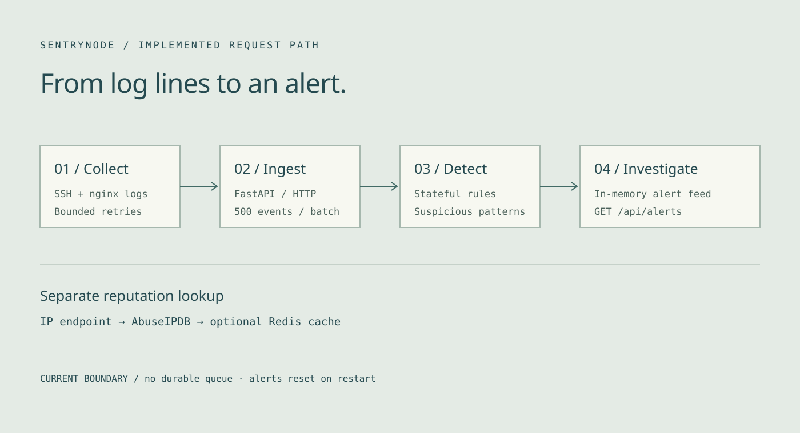

SentryNode
Find the pattern behind a suspicious request. Collect SSH and web logs, detect repeated failures and attack patterns, then inspect the resulting alerts through a FastAPI service.

Why it exists
Individual log lines are difficult to investigate without context. This personal monitoring project turns repeated SSH failures and suspicious HTTP payloads into structured alerts.
Implemented request path
A Python collector parses watched log files and sends HTTP batches to FastAPI. The detection engine tracks patterns in memory. A separate IP reputation endpoint queries AbuseIPDB with an optional Redis cache; enrichment is not automatically attached to every ingested event.
Delivery failure is part of the design
The collector now resends the same chunk after transport failures, HTTP 408, 429 or 5xx. It makes at most six attempts, uses bounded exponential delay and honors numeric Retry-After up to 30 seconds. Other HTTP errors fail immediately. Cancellation propagates and batches larger than 500 are split.
Verification and limits
41 backend unit tests and 20 agent tests passed locally. Delivery tests use mocked HTTP transports, including exhaustion and cancellation. Alerts still reset on restart. No disk spool, idempotency key or enforced agent authentication is implemented. RabbitMQ, Elasticsearch, InfluxDB and Grafana remain provisioned experiments, outside the working request path.